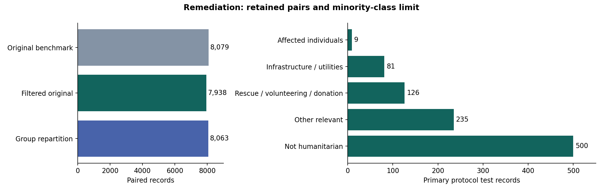
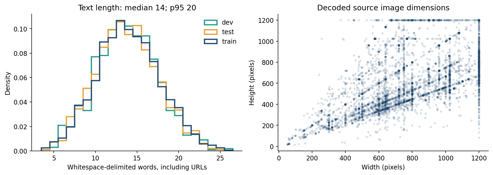
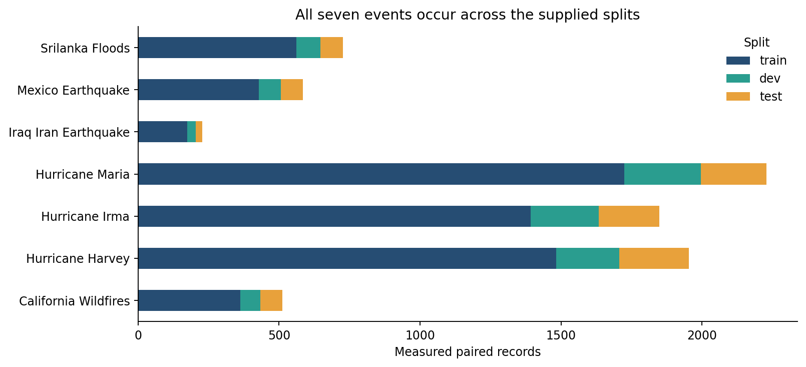

Group members
HMHoàng Trọng Huy Minh2452743
TTVõ Lê Thành Triệu2453297 · Team Leader
NQNguyễn Huỳnh Nam Quốc2453089
CO3133 · Deep Learning and Its Applications
Ho Chi Minh City University of Technology — VNU-HCM
Faculty of Computer Science and Engineering
Group members
Instructor
Lê Thành Sách
Semester 261
GitHub repository↗Assignment content
M1 materials prepared · 4 November 2026. Dataset Proposal for submission; training has not started. M2 and M3 are planned. Prior approval is waived as reported by the group; no formal approval is claimed.
Humanitarian Image and Text Classification with Gated Fusion. Predict one of five humanitarian classes from a tweet and its attached image. Research question: under fixed frozen encoders and leakage-controlled splits, does learned gating improve macro-F1 over concatenation and unimodal baselines, and which modality interactions explain gains or failures?
CrisisMMD v2.0, five-class humanitarian image-text classification. Locked primary filtered_original: 7,938 pairs = 6,001 train / 986 dev / 951 test. This is an explicitly mirror-derived custom benchmark, not authenticated original archive equivalence. Records retain original split membership; the alternative repartition is backup only.
| ID | Class | Train | Dev | Test | Total |
|---|---|---|---|---|---|
| 0 | affected individuals | 71 | 9 | 9 | 89 |
| 1 | infrastructure and utility damage | 601 | 80 | 81 | 762 |
| 2 | rescue volunteering or donation effort | 901 | 148 | 126 | 1175 |
| 3 | other relevant information | 1247 | 235 | 235 | 1717 |
| 4 | not humanitarian | 3181 | 514 | 500 | 4195 |
| Total | 6001 | 986 | 951 | 7938 | |
Of 8,079 audited source pairs, 141 are excluded: 7 unresolved source-annotation discrepancies, 9 confirmed missing-image placeholders and 125 lower-priority duplicate/leakage-related records. No silent relabelling. The original file-level missing/corrupt-image and empty-text rates were 0%; decodable placeholders were a separate content problem.



QCRI source records link images to their posted tweets. Components combine tweet IDs, exact/pixel image hashes, raw/normalized text hashes and reviewed duplicate/shared-asset edges, then retain test > dev > train members. Upstream license: CC BY-NC-SA 4.0; credit Alam, Ofli and Imran and the named mirror. Exact versions, labels, provenance, split rules and EDA sources →
Planned models: image-only ResNet-18, text-only DistilBERT, concatenation fusion, and scalar gated intermediate fusion. Encoders stay frozen in the primary comparison; projections/fusion/heads will be fitted later. A fixed-gate (0.5) ablation will isolate learned gating. No model implementation or experiment is claimed by these plans.
Planned: macro-F1 primary; accuracy, per-class scores and confusion matrix; development-only checkpoint selection; training seeds 42/43/44; paired qualitative and operational modality-conflict review; end-to-end compute reporting. Hardware access is unverified. See the proposal for preprocessing, loss, optimizer and provisional cost details.
M1 dataset evidence only. The earlier remediation passed 51 relevant checks across candidate protocols; 26 result files matched rerun hashes. The pre-publication proposal passed 27 document checks. These are data/document checks, not model metrics. No trained accuracy, F1, learning curves or checkpoints exist in this publication.
Unimodal versus concatenation/gated comparisons are planned for M2–M3. Multimodal superiority is not assumed. The custom filtered test prevents direct score equivalence to the untouched published benchmark; any future comparison must state this protocol difference.
Completed data remediation records the 7 source-label discrepancies, 9 placeholders and duplicate/component exclusions. Model error groups, frequencies and predictions will be measured only after experiments. Prediction disagreement will be reviewed as operational conflict, not fabricated ground-truth modality conflict.
Original agreed-label archive access failed with HTTP 403 in the earlier audit; equivalence is unproved. The seven annotation differences remain unresolved and quarantined. The minority class has only 9 dev / 9 test pairs. No universal semantic-duplicate clearance, unseen-disaster generalization or deployment reliability is established.
No trained checkpoints yet. Reproduce locked primary membership without downloads or training using Python 3.10+:
python scripts/reproduce_primary.py --out /tmp/co3133-a3-m1-replay
This replays audited group metadata; it does not re-audit images. Reproduction requirements and scope →
Slides and the final report are M3 work; no completed slide deck is claimed.
Not prepared at M1. A public/unlisted group presentation with modality interaction analysis is planned for M3. No placeholder video URL is presented as a real deliverable.
ChatGPT Work with the Codex assistant assisted M1 research, validation/remediation, proposal preparation and publication maintenance. The underlying model/build is not independently verified. Operator: Nguyễn Huỳnh Nam Quốc (2453089), confirmed earlier. Assistant checks are recorded; completed independent student review is not attested. No model training or formal approval is claimed.